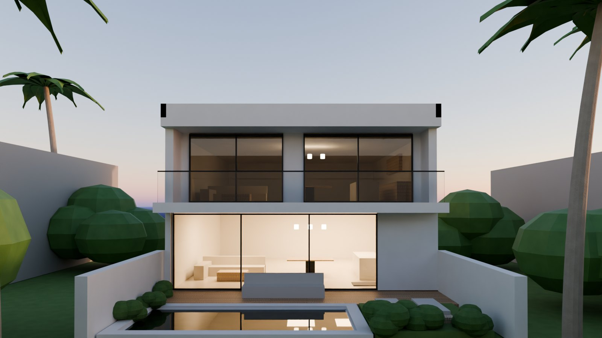

La misma casa, con la misma planta, las mismas medidas y la misma alberca, vestida de seis formas distintas. Elige uno y compara materiales y ambiente.

Planta y medidas del anteproyecto: tres recámaras, estudio, sala-comedor-cocina abierta a la terraza, balcón y alberca de 5.60 × 2.40 m.
Materiales de fachada, marcos, lamas, aleros, iluminación exterior y pisos de terraza. Cada estilo cambia el carácter de la casa sin mover un muro.
Renders con trazado de rayos en Blender Cycles, a la hora azul, con las luces interiores encendidas. Muebles y vegetación son de referencia.